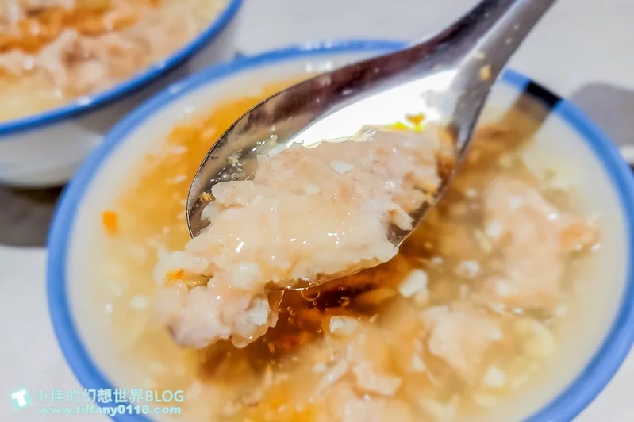
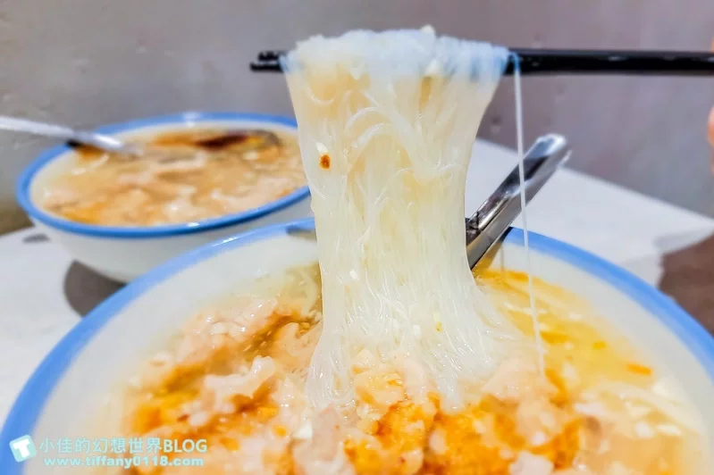

首頁
柴拉麵
三輪車手工麻糬
心得
阿娘給的蒜味肉羹
阿娘給的蒜味肉羹環境更寬敞舒適，蒜味肉羹本身算味更濃郁，肉羹有調味過超好吃，
連我這個不太愛吃蒜跟不吃肉羹的人也完全淪陷，是我非常喜歡的宜蘭在地小吃推薦。

蒜味肉羹
之前吃北門蒜味肉羹的時候我就覺得不錯吃了，這次吃到阿娘給的蒜味肉羹覺得…阿娘給的贏了。
阿娘給蒜味肉羹蒜味更濃郁，然後蒜給的也很多，吃起來有蒜香但不會到嗆辣我非常喜歡。
肉羹本身有調味過，吃起來軟嫩又香，連我這個原本不愛肉羹的人吃過一次就愛上。

蒜味肉羹米粉
比較一下單純肉羹和加了米粉的肉羹，數量上是有差別的，
喜歡單吃肉羹的就點肉羹，但我自己覺得肉羹米粉給的肉羹量也滿多的就是了。